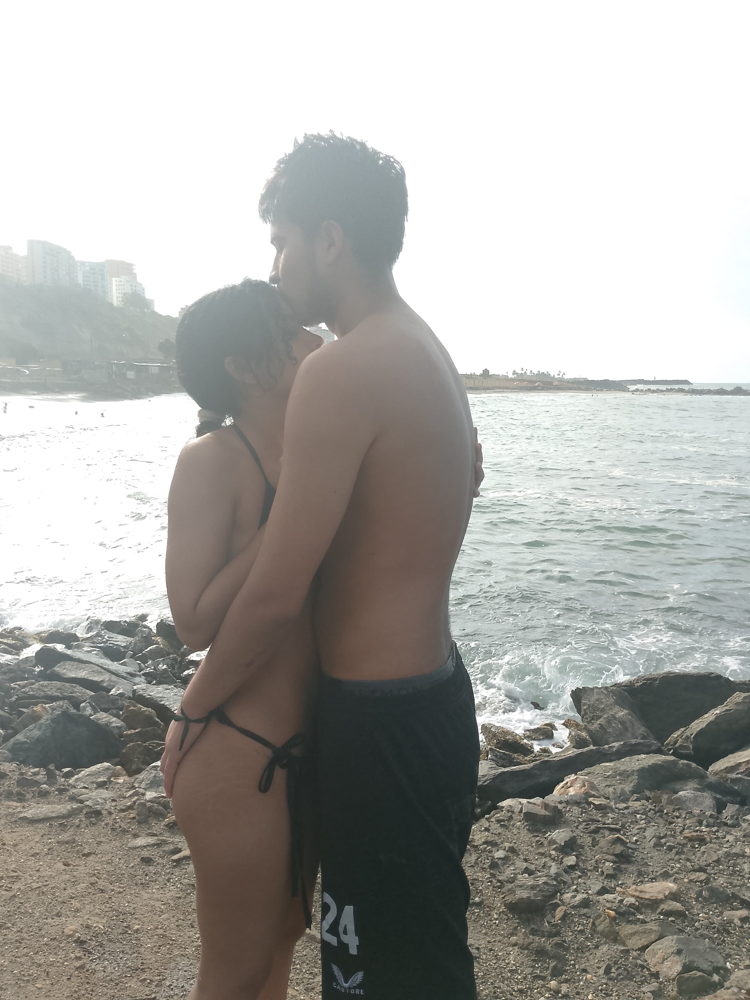

```html
<!DOCTYPE html>
<html lang="es">
<head>
<meta charset="UTF-8">
<meta name="viewport" content="width=device-width, initial-scale=1.0">
<title>Para Eyla 💌</title>

<style>
body{
  margin:0;
  font-family: Georgia, serif;
  overflow:hidden;
  color:#3b2a1a;
}

/* ===== CIELO CINEMATICO ===== */
#cielo{
  position:fixed;
  inset:0;
  z-index:-2;
  background: linear-gradient(to top,#ff9a9e,#fad0c4,#fbc2eb,#a18cd1);
  background-size:400% 400%;
  animation:cielo 20s ease infinite;
}
@keyframes cielo{
  0%{background-position:0% 100%;}
  50%{background-position:100% 0%;}
  100%{background-position:0% 100%;}
}

/* NUBES */
.nube{
  position:fixed;
  top:10%;
  width:200px;
  height:60px;
  background:rgba(255,255,255,0.6);
  border-radius:50px;
  filter:blur(8px);
  animation:moverNube 60s linear infinite;
}
@keyframes moverNube{
  from{left:-250px;}
  to{left:110%;}
}

/* ===== LOCK ===== */
#lockScreen{
  position:fixed;
  inset:0;
  background:rgba(0,0,0,0.9);
  display:flex;
  flex-direction:column;
  justify-content:center;
  align-items:center;
  color:white;
  z-index:10;
}
input{
  padding:12px;
  border:none;
  border-radius:8px;
  font-size:18px;
  text-align:center;
}
button{
  margin-top:10px;
  padding:10px 18px;
  border:none;
  border-radius:8px;
  background:#ff4d88;
  color:white;
  cursor:pointer;
}

/* ===== SOBRE ===== */
#sobre{
  position:absolute;
  width:260px;
  height:180px;
  background:#ff99bb;
  border-radius:10px;
  left:50%;
  top:60%;
  transform:translate(-50%,-50%);
  cursor:pointer;
  box-shadow:0 0 25px rgba(255,105,180,0.6);
}

/* ===== CARTA ===== */
#carta{
  position:absolute;
  width:85%;
  max-width:600px;
  height:70%;
  background:#f5e6d3;
  border-radius:12px;
  left:50%;
  top:50%;
  transform:translate(-50%,-50%) scale(0);
  padding:25px;
  overflow:auto;
  box-shadow:0 15px 40px rgba(0,0,0,0.4);
  transition:transform 1s;
}

/* EYLA ANIMADO */
#nombre{
  text-align:center;
  font-size:32px;
  color:#ff4d88;
  animation:latido 1.8s infinite;
  text-shadow:0 0 10px rgba(255,105,180,0.8);
}
@keyframes latido{
  0%,100%{transform:scale(1);}
  50%{transform:scale(1.08);}
}

#texto{
  font-size:18px;
  min-height:120px;
}

#foto{
  width:100%;
  border-radius:10px;
  margin-top:10px;
}

/* GATITO */
#gatito{
  position:fixed;
  bottom:10px;
  left:-100px;
  font-size:40px;
  transition:left 4s linear;
}

/* BOTON MUSICA */
#musicBtn{
  position:fixed;
  bottom:15px;
  right:15px;
}
</style>
</head>

<body>

<div id="cielo"></div>
<div class="nube" style="top:12%;animation-delay:0s;"></div>
<div class="nube" style="top:20%;animation-delay:20s;"></div>

<!-- LOCK -->
<div id="lockScreen">
<h2>💌 Acceso privado</h2>
<p>Ingresa nuestra clave</p>
<input type="password" id="clave">
<button onclick="verificar()">Desbloquear</button>
</div>

<!-- SOBRE -->
<div id="sobre" onclick="abrirCarta()"></div>

<!-- CARTA -->
<div id="carta">
<h2 id="nombre">Eyla 💖</h2>
<div id="texto"></div>

<p style="text-align:right;">De tu amado gatito 🐱💖</p>
</div>

<div id="gatito">🐱</div>

<button id="musicBtn" onclick="toggleMusic()">🎵</button>

<audio id="musica" loop>
<source src="musica.mp3" type="audio/mpeg">
</audio>

<script>

/* CLAVE */
const claveCorrecta="24/03/2023";
function verificar(){
  if(document.getElementById("clave").value===claveCorrecta){
    document.getElementById("lockScreen").style.display="none";
    let m=document.getElementById("musica");
    m.volume=0.15;
    m.play();
  }else alert("Clave incorrecta 💔");
}

/* MENSAJE */
const mensaje=`${`Mi querida gatita Eyla,
Si estas leyendo esto, es porque recibiste el ramito de flores, te lo doy con todo mi amor. 
Primero te cuento como lo planee: la verdad que le escribí a Carmita para que me ayudara, la
cosa es que no sabia como enviar el dinero, si te decia a ti, probablemente te darias 
cuenta. Finalmente le pude enviar a carmita y estuvimos en contacto todos estos dias. Pense en
decirle a tus amigas, pero nunca me respondieron. 
Te envio este ramito de San Valentin, la verdad que queria hacerte algo especial a pesar de
la distanacia. Puede que mi cuerpo no este contigo, pero mi mente, corazón y alma están a tu 
lado, por eso hago todo esto, porque eres mi vida, eres mi gran amor. Te amo mi niña, y por lo
mismo, me esfuerzo por enamorarte dia tras dia, siempre buscando algo nuevo que te haga feliz.
Cada dia te quiero enamorar, buscar la forma de demostrarte mi amor, gatita Eyla, tu nombre,
tu voz, tus ojitos,carita, cuerpo, forma de ser, humor, pensamientos e ideas, están tatuados.
Por eso hago esta página, siempre va a estar, cuando me extrañes o te sientas mal, vas a poder
entrar. 
Espero que te guste mi niña, lo estuve detallando con mucho amor, para que te gustara.
La cancion es le pido a Dios de feid, porque todas las noches le pido a mi Dios que nuestro
amor florezca, que todos estos momentos duros pasen y que todos los sueños, metas y vida que
queremos se cumplan en su nombre. Te quiero agradecer por ser tan firme conmigo, por estar, por
hablarme bonito, por tus mensajitos, por querer compartir conmigo y no dejarme solo. 
Eres todo, aca me confieso, en mi vida estas tu y solo tu, quiero que seas tu y espero que tu 
tambien quieras que seas yo. Nuestro amor esta bendecido, todos los dias siento una enorme 
emocion que me hace pensar: esta gatita es una bendicion de Dios, ¿como hago para que ella vea
que la amo? y pum, esta vez fue una pagina web dedicada a ti.
Luego seran mas cositas, mas regalos, hasta que llegue ese dia soñado de volvernos a encontrar,
un beso y un abrazo eterno, ese sera nuestro regalo.
Finalmente, te confieso que con toda la sinceridad del mundo te digo que la distancia no va a 
detener esto que siento por ti. Te amo y mas de lo que puedes imaginar, amor mas que amor es el
nuestro y te lo vengo a dar. Ruego a Dios tenerte a mi lado y entonces poderte abrazar.
Te amo, amor de mi alma...`}`;

let i=0;
function escribir(){
  if(i<mensaje.length){
    document.getElementById("texto").innerHTML+=mensaje.charAt(i);
    i++;
    setTimeout(escribir,22);
  }
}

/* ABRIR */
function abrirCarta(){
  document.getElementById("carta").style.transform="translate(-50%,-50%) scale(1)";
  escribir();
  lluviaRosas();
  caminarGato();
}

/* ROSAS SUAVES */
function lluviaRosas(){
  setInterval(()=>{
    let r=document.createElement("div");
    r.innerHTML="🌸";
    r.style.position="fixed";
    r.style.left=Math.random()*100+"%";
    r.style.top="-20px";
    r.style.fontSize=(16+Math.random()*12)+"px";
    document.body.appendChild(r);
    let vel=1+Math.random()*2;
    let caida=setInterval(()=>{
      r.style.top=(r.offsetTop+vel)+"px";
      if(r.offsetTop>window.innerHeight){
        clearInterval(caida);
        r.remove();
      }
    },30);
  },400);
}

/* GATITO CAMINA */
function caminarGato(){
  const g=document.getElementById("gatito");
  g.style.left="45%";
  setTimeout(()=>{g.innerHTML="🐱💖";},4000);
}

/* CORAZONES TOUCH */
document.addEventListener("click",e=>{
  let c=document.createElement("div");
  c.innerHTML="💖";
  c.style.position="fixed";
  c.style.left=e.clientX+"px";
  c.style.top=e.clientY+"px";
  c.style.fontSize="20px";
  document.body.appendChild(c);
  setTimeout(()=>c.remove(),1000);
});

/* MUSICA */
function toggleMusic(){
  let m=document.getElementById("musica");
  if(m.paused)m.play();else m.pause();
}

</script>
</body>
</html>
```

